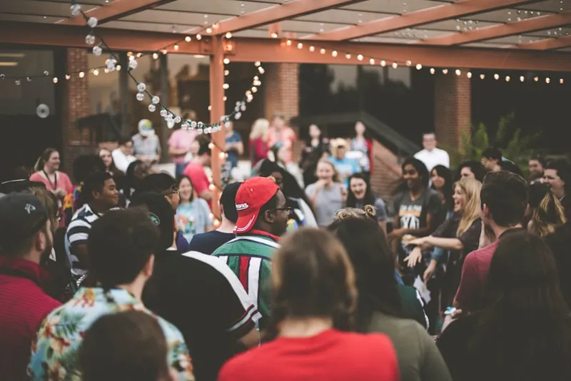
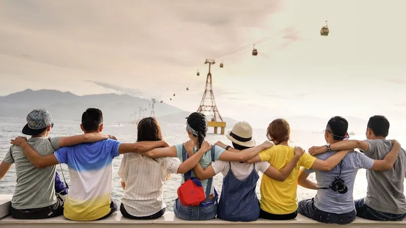
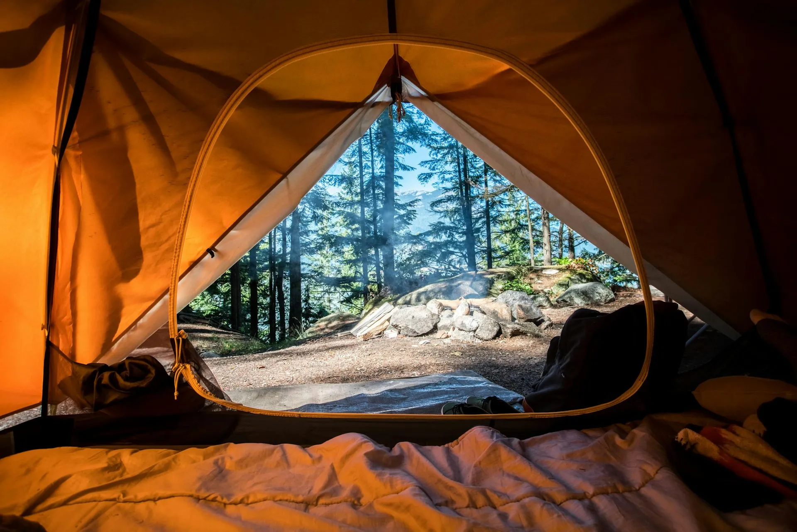

5 Manfaat Team Building Outbound untuk Meningkatkan Produktivitas Perusahaan

Kegiatan team building outdoor membangun ikatan emosional yang lebih kuat antar anggota tim perusahaan.
Daftar Isi
Di era persaingan bisnis yang semakin ketat, perusahaan-perusahaan modern terus mencari cara inovatif untuk meningkatkan produktivitas dan kinerja tim mereka. Salah satu metode yang terbukti efektif dan semakin populer adalah team building outbound. Berbeda dengan pelatihan konvensional di dalam ruangan, outbound menawarkan pendekatan experiential learning yang lebih berkesan dan berdampak jangka panjang.
Menurut berbagai studi manajemen SDM, perusahaan yang rutin melakukan kegiatan team building outbound mengalami peningkatan produktivitas hingga 25% dan penurunan turnover karyawan hingga 30%. Angka-angka ini menunjukkan bahwa investasi dalam team building bukan sekadar pengeluaran, melainkan investasi strategis yang memberikan return on investment (ROI) yang signifikan.
Manfaat 1: Meningkatkan Komunikasi Tim yang Efektif
Komunikasi adalah fondasi dari setiap tim yang produktif. Sayangnya, dalam lingkungan kerja sehari-hari, barrier komunikasi seringkali muncul karena hierarki jabatan, perbedaan departemen, atau bahkan introvert personality. Team building outbound menghancurkan barrier-barrier ini dengan menempatkan semua peserta dalam situasi yang setara.
Bagaimana Outbound Meningkatkan Komunikasi
Dalam kegiatan outbound, peserta dihadapkan pada tantangan yang hanya bisa diselesaikan melalui komunikasi aktif. Misalnya, permainan blind walk di mana satu orang harus memandu rekannya yang tertutup mata melalui rintangan. Situasi ini memaksa peserta untuk berkomunikasi dengan jelas, mendengarkan dengan cermat, dan membangun trust yang mendalam.
- Menghilangkan sekat antar departemen — Tim dari berbagai divisi bisa saling mengenal dan memahami cara kerja masing-masing.
- Melatih active listening — Peserta belajar untuk benar-benar mendengarkan, bukan sekadar menunggu giliran berbicara.
- Membangun empati — Menghadapi tantangan bersama menciptakan pemahaman yang lebih dalam tentang kekuatan dan kelemahan masing-masing anggota tim.
"Komunikasi yang baik bukan hanya tentang berbicara dengan jelas, tetapi juga tentang mendengarkan dengan hati. Outbound mengajarkan keduanya secara bersamaan." — Filosofi Team Building Gemilang Outbound
Manfaat 2: Membangun Kepercayaan Antar Anggota Tim
Trust atau kepercayaan adalah elemen krusial dalam setiap tim berkinerja tinggi. Tanpa trust, kolaborasi menjadi dangkal dan defensif. Team building outbound menyediakan platform yang unik untuk membangun dan memperkuat trust antar anggota tim.
Aktivitas Trust Building dalam Outbound
Aktivitas seperti trust fall (menjatuhkan diri ke belakang dan ditangkap oleh rekan), human ladder (memanjat tangga yang terbuat dari tubuh rekan tim), dan blindfolded navigation secara langsung melatih kemampuan mempercayai orang lain. Pengalaman ini menciptakan bonding emosional yang jauh lebih dalam dibanding interaksi kantor biasa.

Aktivitas trust building membangun kepercayaan yang kuat antar anggota tim.
Manfaat 3: Peningkatan Produktivitas yang Terukur
Peningkatan komunikasi dan kepercayaan yang dibangun melalui outbound secara langsung berdampak pada produktivitas kerja. Tim yang saling percaya dan berkomunikasi dengan baik dapat menyelesaikan proyek lebih cepat, mengurangi konflik internal, dan menghasilkan output yang lebih berkualitas.
Data yang Mendukung
Penelitian dari Harvard Business Review menunjukkan bahwa tim dengan tingkat kohesi tinggi (yang sering dibangun melalui team building) mengalami peningkatan performa hingga 50% dibanding tim yang tidak pernah melakukan kegiatan bonding. Selain itu, karyawan yang merasa terhubung dengan rekan kerjanya cenderung lebih engaged dan termotivasi dalam bekerja.
- Pengurangan waktu pengerjaan proyek hingga 20%
- Penurunan konflik internal sebesar 40%
- Peningkatan kualitas output dan inovasi
- Peningkatan kepuasan kerja karyawan
Baca Juga
→ Panduan Lengkap Outbound di Batu Malang untuk Pemula → Rekomendasi Lokasi Outbound Terbaik di Batu Malang 2026Manfaat 4: Mengembangkan Jiwa Kepemimpinan
Team building outbound adalah wahana yang sempurna untuk mengidentifikasi dan mengembangkan potensi kepemimpinan dalam organisasi. Dalam setting outdoor yang menantang, pemimpin alami akan muncul secara organik — terlepas dari jabatan formal mereka di kantor.
Pengembangan Leadership Melalui Outbound
Kegiatan outdoor menuntut pengambilan keputusan cepat, delegasi tugas yang efektif, dan kemampuan memotivasi anggota tim dalam situasi penuh tekanan. Ini adalah keterampilan kepemimpinan yang sulit dilatih di kelas pelatihan konvensional tetapi berkembang secara alami dalam konteks outbound.
Vendor outbound Batu Malang terpercaya seperti Gemilang Outbound merancang program khusus yang fokus pada leadership development, di mana peserta mendapatkan kesempatan untuk memimpin tim melalui berbagai tantangan yang tersturktur. Feedback dari fasilitator profesional membantu peserta memahami gaya kepemimpinan mereka dan area yang perlu dikembangkan.
Manfaat 5: Meningkatkan Kesejahteraan dan Moral Karyawan
Burnout dan stres kerja adalah masalah nyata yang dihadapi banyak perusahaan modern. Team building outbound menawarkan pelarian yang sehat dari rutinitas kerja sehari-hari. Aktivitas fisik di alam terbuka, udara segar pegunungan Batu Malang, dan tawa bersama rekan kerja adalah kombinasi sempurna untuk me-recharge energi mental dan fisik karyawan.
Dampak pada Well-being Karyawan
Penelitian menunjukkan bahwa karyawan yang rutin mendapatkan kegiatan rekreasi dari perusahaan memiliki tingkat stres 25% lebih rendah dan loyalitas 35% lebih tinggi. Efek positif ini tidak bersifat sesaat — bonding yang terbentuk selama outbound menciptakan lingkungan kerja yang lebih positif dan supportif dalam jangka panjang.

Suasana outbound di alam terbuka Batu Malang yang meningkatkan moral dan kesejahteraan karyawan.
🢠Paket Team Building Korporat mulai Rp 250.000/orang! Konsultasi Gratis
Mengapa Memilih Vendor Outbound Batu Malang Terpercaya
Keberhasilan program team building sangat bergantung pada kualitas vendor yang menyelenggarakannya. Vendor outbound Batu Malang terpercaya tidak hanya menyediakan kegiatan menyenangkan, tetapi juga merancang program yang terstruktur dengan tujuan pengembangan tim yang jelas.
Gemilang Outbound menawarkan program team building yang dikustomisasi berdasarkan kebutuhan spesifik perusahaan Anda. Dengan fasilitator berpengalaman dan lokasi-lokasi ekslusif di kawasan Batu Malang, kami memastikan setiap program memberikan dampak positif yang terukur bagi tim Anda.
Kesimpulan
Team building outbound bukan sekadar kegiatan rekreasi — ini adalah investasi strategis yang memberikan manfaat nyata bagi produktivitas, komunikasi, kepercayaan, kepemimpinan, dan kesejahteraan tim perusahaan Anda. Dengan memilih vendor outbound Batu Malang terpercaya, Anda bisa memastikan bahwa investasi ini memberikan return yang maksimal.
Gemilang Outbound siap menjadi partner strategis untuk pengembangan tim perusahaan Anda. Hubungi kami sekarang untuk konsultasi program team building yang paling sesuai dengan kebutuhan organisasi Anda!